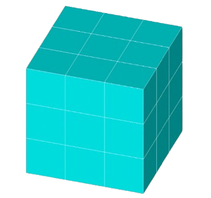

Moore Cellular Automaton
Occurrence:
Moore's cellular automaton was proposed and developed by American
physicist Edward Fredkin Moore in 1962. This type of cellular
automaton is one of the most common and researched in the field of
research on complex systems and artificial life.
Principle of operation:
In Moore's cellular automaton, each cell (if it is not marginal)
has 26 neighbors, since the cell is the neighbor of the grain (the
original cell) if it shares a side, or vertex, with it. An example
of filling is shown in Figure 2. The future state of the cell
itself depends on the state of the grain and the condition of its
neighbors:
y’[k][i][j] = f(y[k][i][j], y[k + 1][i][j],
y[k + 1][i][j - 1], y[k + 1][i][j + 1], y[k + 1][i + 1][j], y[k +
1][i + 1][j - 1], y[k + 1][i + 1][j + 1], y[k + 1][i - 1][j], y[k
+ 1][i - 1][j - 1], y[k + 1][i -1][j + 1], y[k][i][j], y[k][i][j -
1], y[k][i][j + 1], y[k][i + 1][j], y[k][i + 1][j - 1], y[k][i +
1][j + 1], y[k][i - 1][j], y[k][i - 1][j - 1], y[k][i -1][j + 1],
y[k - 1][i][j], y[k - 1][i][j - 1], y[k - 1][i][j + 1], y[k - 1][i
+ 1][j], y[k - 1][i + 1][j - 1], y[k - 1][i + 1][j + 1], y[k -
1][i - 1][j], y[k - 1][i - 1][j - 1], y[k - 1][i -1][j + 1])
